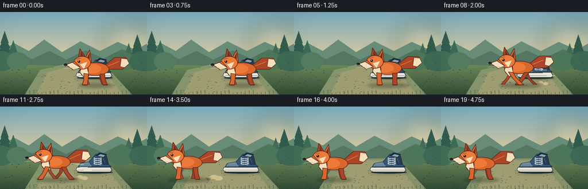
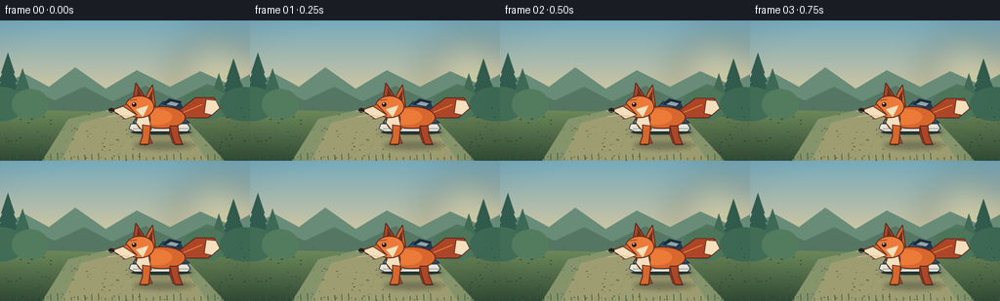

CODING AGENTS AS PIXEL WORLD MODELS
traex/GPT-5.6-Sol · dynamic_spatial_relationship_0026
点击播放 · 原生 RGB 像素
逐轮保存的候选
回放视频、检查图与代码变化。
每份候选均可单独播放。实际图片检查记录在下方工具轨迹中。
候选 01播放与检查图
点击播放 · 原生 RGB 像素


展开代码变化
--- 上一保存版本
+++ 本次保存版本
@@ -0,0 +1,273 @@
+from pathlib import Path
+import math
+import numpy as np
+from PIL import Image, ImageDraw, ImageFilter
+import artifact_io
+
+W, H, N = 256, 144, 20
+S = 4
+
+def sc(v):
+ return int(round(v * S))
+
+def box(b):
+ return tuple(sc(v) for v in b)
+
+def pts(p):
+ return [(sc(x), sc(y)) for x, y in p]
+
+def ellipse(d, b, fill, outline=None, width=1):
+ d.ellipse(box(b), fill=fill, outline=outline, width=sc(width) if outline else 1)
+
+def polygon(d, p, fill, outline=None, width=1):
+ q = pts(p)
+ d.polygon(q, fill=fill)
+ if outline:
+ d.line(q + [q[0]], fill=outline, width=sc(width), joint="curve")
+
+def line(d, p, fill, width=1, joint="curve"):
+ d.line(pts(p), fill=fill, width=sc(width), joint=joint)
+
+def rr(d, b, radius, fill, outline=None, width=1):
+ d.rounded_rectangle(box(b), radius=sc(radius), fill=fill, outline=outline,
+ width=sc(width) if outline else 1)
+
+def make_background():
+ # Layered dawn light: pale sky over a quiet forest clearing.
+ arr = np.zeros((H*S, W*S, 3), dtype=np.uint8)
+ sky_top = np.array([118, 170, 188], float)
+ sky_bottom = np.array([229, 205, 155], float)
+ ground_top = np.array([110, 139, 91], float)
+ ground_bottom = np.array([49, 75, 54], float)
+ for yy in range(H*S):
+ y = yy / S
+ if y < 90:
+ t = y / 90
+ col = sky_top*(1-t) + sky_bottom*t
+ else:
+ t = (y-90)/(H-90)
+ col = ground_top*(1-t) + ground_bottom*t
+ arr[yy, :, :] = np.clip(col, 0, 255)
+ im = Image.fromarray(arr, 'RGB')
+ d = ImageDraw.Draw(im)
+ # sun haze and distant clouds
+ glow = Image.new('RGBA', im.size, (0,0,0,0))
+ gd = ImageDraw.Draw(glow)
+ gd.ellipse(box((180, 17, 261, 97)), fill=(255, 229, 163, 75))
+ glow = glow.filter(ImageFilter.GaussianBlur(sc(18)))
+ im = Image.alpha_composite(im.convert('RGBA'), glow).convert('RGB')
+ d = ImageDraw.Draw(im)
+ # soft distant hill layers
+ polygon(d, [(0,80),(0,65),(26,55),(50,68),(77,48),(108,70),(140,51),(174,68),(205,52),(236,66),(256,55),(256,94)], '#688c78')
+ polygon(d, [(0,91),(0,78),(31,71),(56,82),(86,68),(115,83),(149,67),(180,81),(212,65),(256,79),(256,97)], '#547662')
+ # pines at sides frame the action without clutter
+ for x,y,h,c in [(8,32,70,'#315c4f'),(23,48,52,'#3d6957'),(239,38,63,'#315b4c'),(224,53,45,'#426b56')]:
+ line(d, [(x, y+h*.32),(x,y+h)], '#4b5945', 2)
+ for k in range(5):
+ cy = y + 11 + k*h*.13
+ half = 7 + k*2.7
+ polygon(d, [(x,cy-10),(x-half,cy+11),(x+half,cy+11)], c)
+ # middle-ground bushes
+ for x,r,c in [(0,26,'#426e57'),(31,19,'#527c5d'),(211,23,'#4c7659'),(250,25,'#3d6954')]:
+ ellipse(d, (x-r,77-r*.35,x+r,97+r*.25), c)
+ # path/clearing
+ polygon(d, [(43,144),(70,101),(113,91),(180,90),(230,144)], '#85946b')
+ polygon(d, [(63,144),(83,105),(125,94),(176,94),(213,144)], '#9e9d72')
+ # dappled ground texture, deterministic
+ rng = np.random.default_rng(26)
+ for _ in range(180):
+ x = float(rng.uniform(0,W)); y = float(rng.uniform(88,H))
+ if 52 < x < 220:
+ color = (91, 99, 66, int(rng.integers(18,42)))
+ else:
+ color = (38, 70, 48, int(rng.integers(20,48)))
+ r = float(rng.uniform(.25, 1.1))
+ ellipse(d, (x-r,y-r*.4,x+r,y+r*.4), color)
+ # foreground grass silhouettes
+ for x in range(3,256,7):
+ bend = ((x*17)%7)-3
+ h = 2 + ((x*13)%6)
+ line(d, [(x,143),(x+bend*.25,143-h)], '#355b43', .65)
+ return im
+
+BG = make_background()
+
+def draw_shadow(base, cx, cy, rx, ry, alpha=75):
+ lay = Image.new('RGBA', base.size, (0,0,0,0))
+ ld = ImageDraw.Draw(lay)
+ ld.ellipse(box((cx-rx,cy-ry,cx+rx,cy+ry)), fill=(22,38,28,alpha))
+ lay = lay.filter(ImageFilter.GaussianBlur(sc(2.2)))
+ return Image.alpha_composite(base.convert('RGBA'), lay)
+
+def draw_shoe(im, cx=165, ground=114):
+ d = ImageDraw.Draw(im)
+ # rear object, cool blue canvas sneaker. Toe faces left.
+ dark = '#263c52'; navy = '#355776'; mid = '#527895'; seam = '#172d40'
+ # tiny occlusion shadow beneath sole
+ ellipse(d, (cx-31, ground-1.5, cx+31, ground+3), (39,53,46,85))
+ # white rubber outsole
+ polygon(d, [(cx-31,ground-8),(cx+27,ground-8),(cx+30,ground-3),(cx+27,ground),(cx-27,ground),(cx-33,ground-3)], '#e8e5d8', seam, .7)
+ line(d, [(cx-29,ground-3),(cx+29,ground-3)], '#8c918e', .8)
+ # upper, with unmistakable heel collar and toe box
+ polygon(d, [(cx-29,ground-9),(cx-23,ground-15),(cx-10,ground-18),(cx+2,ground-31),(cx+20,ground-29),(cx+24,ground-13),(cx+29,ground-9)], navy, seam, 1)
+ polygon(d, [(cx-29,ground-9),(cx-25,ground-15),(cx-10,ground-18),(cx-5,ground-9)], '#63849a', seam, .7)
+ polygon(d, [(cx+10,ground-29),(cx+21,ground-27),(cx+24,ground-13),(cx+15,ground-13)], dark, seam, .8)
+ # collar opening
+ polygon(d, [(cx+1,ground-28),(cx+8,ground-34),(cx+21,ground-31),(cx+16,ground-25)], '#182b3c')
+ polygon(d, [(cx+5,ground-28),(cx+10,ground-31),(cx+18,ground-29),(cx+15,ground-26)], '#91a3a7')
+ # eyelets and crossing laces
+ for i in range(4):
+ yy = ground-24 + i*3.2
+ ellipse(d, (cx-2,yy-1,cx,yy+1), '#d7d9d1')
+ ellipse(d, (cx+10,yy-1,cx+12,yy+1), '#d7d9d1')
+ line(d, [(cx-1,yy),(cx+11,yy+2.1)], '#ece9db', 1)
+ line(d, [(cx+11,yy),(cx-1,yy+2.1)], '#ece9db', .85)
+ # stitching and toe shine
+ line(d, [(cx-23,ground-14),(cx-10,ground-14),(cx-5,ground-10)], '#9db0ba', .55)
+ line(d, [(cx+14,ground-24),(cx+18,ground-15)], '#6e8ba0', .6)
+ return im
+
+def dust_puffs(im, frame, fox_x, ground):
+ if frame < 6 or frame > 14:
+ return im
+ d = ImageDraw.Draw(im)
+ age = (frame-6)
+ # two warm translucent puffs trailing to the right
+ for k in range(3):
+ px = fox_x + 28 + k*8 + age*1.3
+ py = ground - 2 - (k%2)*2
+ r = 2.5 + .45*age + k*.5
+ ellipse(d, (px-r,py-r*.55,px+r,py+r*.55), (205,190,141,max(22,76-age*4-k*8)))
+ return im
+
+def draw_fox(im, cx, ground, frame, moving):
+ d = ImageDraw.Draw(im)
+ # Body bobs only while running; fox remains grounded and spatially readable.
+ if moving:
+ phase = (frame-5) * 1.42
+ bob = -1.4 - 1.5*abs(math.sin(phase))
+ stride = math.sin(phase)
+ else:
+ phase = 0
+ bob = 0
+ stride = 0
+ gy = ground
+ y = ground - 19 + bob
+ outline = '#5b291d'; orange = '#d9672d'; orange_hi = '#ec7b39'; orange_dark = '#ad4627'; cream = '#f5dfbd'
+
+ # Tail behind body: buoyant animation gives the run life.
+ wag = (math.sin(phase*.72)*4 if moving else math.sin(frame*.28)*1.2)
+ tail_pts = [(cx+18,y-15),(cx+36,y-29+wag),(cx+55,y-29+wag*.7),(cx+61,y-18+wag*.35),
+ (cx+49,y-8),(cx+28,y-8),(cx+17,y-4)]
+ polygon(d, tail_pts, orange_dark, outline, 1)
+ # broad cream tail tip
+ polygon(d, [(cx+47,y-27+wag*.65),(cx+57,y-26+wag*.5),(cx+61,y-18+wag*.35),
+ (cx+53,y-11+wag*.1),(cx+45,y-13+wag*.2)], cream, outline, .7)
+ line(d, [(cx+22,y-13),(cx+43,y-22+wag*.5)], '#ee8341', 1.1)
+
+ # Far-side legs first, muted for depth.
+ hip_back = cx+13
+ hip_front = cx-13
+ if moving:
+ back_foot_far = hip_back - stride*17
+ front_foot_far = hip_front + stride*16
+ knee1 = hip_back - stride*6
+ knee2 = hip_front + stride*6
+ else:
+ back_foot_far, front_foot_far = hip_back+3, hip_front+2
+ knee1, knee2 = hip_back, hip_front
+ polygon(d, [(hip_back-4,y-1),(hip_back+3,y),(knee1+2,y+11),(back_foot_far+3,gy-1),(back_foot_far-3,gy-1),(knee1-3,y+10)], '#9b4028', outline, .8)
+ polygon(d, [(hip_front-4,y-1),(hip_front+3,y),(knee2+2,y+10),(front_foot_far+3,gy-1),(front_foot_far-3,gy-1),(knee2-3,y+10)], '#aa4829', outline, .8)
+
+ # torso and shoulder
+ ellipse(d, (cx-23,y-20,cx+26,y+3), orange, outline, 1.1)
+ ellipse(d, (cx-19,y-17,cx+12,y-1), orange_hi)
+ ellipse(d, (cx-25,y-17,cx-10,y+4), orange_dark, outline, .7)
+ # pale chest bib
+ polygon(d, [(cx-21,y-15),(cx-12,y-10),(cx-9,y+4),(cx-17,y+7),(cx-25,y-3)], cream, outline, .65)
+
+ # Near legs (strong clean silhouettes)
+ if moving:
+ foot_front = hip_front - stride*19
+ foot_back = hip_back + stride*18
+ kf = hip_front - stride*7
+ kb = hip_back + stride*7
+ else:
+ foot_front, foot_back = hip_front-4, hip_back+5
+ kf, kb = hip_front-1, hip_back+2
+ polygon(d, [(hip_back-3,y),(hip_back+5,y),(kb+4,y+10),(foot_back+5,gy),(foot_back-3,gy),(kb-3,y+10)], orange_dark, outline, 1)
+ polygon(d, [(hip_front-5,y-1),(hip_front+3,y),(kf+3,y+10),(foot_front+5,gy),(foot_front-4,gy),(kf-4,y+10)], orange, outline, 1)
+ # dark paws
+ line(d, [(foot_front-4,gy),(foot_front+5,gy)], outline, 1.5)
+ line(d, [(foot_back-3,gy),(foot_back+5,gy)], outline, 1.5)
+
+ # Fox head, facing left, with long muzzle and tall ears.
+ hx, hy = cx-26, y-18
+ # ears behind head
+ polygon(d, [(hx-2,hy-7),(hx+1,hy-26),(hx+11,hy-10)], orange_dark, outline, 1)
+ polygon(d, [(hx+9,hy-8),(hx+18,hy-24),(hx+21,hy-2)], orange, outline, 1)
+ polygon(d, [(hx+2,hy-11),(hx+3,hy-21),(hx+8,hy-11)], '#6d3026')
+ polygon(d, [(hx+13,hy-9),(hx+18,hy-19),(hx+18,hy-7)], '#6d3026')
+ ellipse(d, (hx-10,hy-13,hx+20,hy+10), orange_hi, outline, 1)
+ # angular fox cheek and white muzzle
+ polygon(d, [(hx-8,hy-4),(hx-25,hy+2),(hx-11,hy+10),(hx+2,hy+7)], orange, outline, .8)
+ polygon(d, [(hx-23,hy+2),(hx-12,hy-2),(hx+2,hy+7),(hx-10,hy+11)], cream, outline, .65)
+ # white cheek slash
+ polygon(d, [(hx+1,hy+1),(hx+14,hy-3),(hx+8,hy+9)], cream)
+ # nose, eye, brow and ear highlights
+ ellipse(d, (hx-27,hy-.2,hx-21,hy+4.5), '#231d1b')
+ ellipse(d, (hx-3,hy-6,hx+1.5,hy-1.5), '#221b17')
+ ellipse(d, (hx-2.1,hy-5.4,hx-.6,hy-3.9), '#f7e6b6')
+ line(d, [(hx-5,hy-8),(hx+2,hy-9)], outline, .8)
+ line(d, [(hx-18,hy+7),(hx-6,hy+8)], '#b87450', .5)
+ # whiskers
+ line(d, [(hx-15,hy+5),(hx-29,hy+3)], '#f4e7ce', .45)
+ line(d, [(hx-14,hy+7),(hx-28,hy+9)], '#f4e7ce', .45)
+ return im
+
+def render_frame(i):
+ im = BG.copy().convert('RGBA')
+ shoe_x, shoe_ground = 165, 114
+ # fox's foreground plane is lower, a deliberate depth cue for "in front of".
+ fox_ground = 127
+ # Hold in front for 1.25s; then smooth, unambiguous travel left.
+ if i <= 4:
+ fox_x = 164.0
+ moving = False
+ elif i <= 15:
+ t = (i-4)/11
+ e = t*t*(3-2*t)
+ fox_x = 164 + (68-164)*e
+ moving = True
+ else:
+ fox_x = 68.0
+ moving = False
+ im = draw_shadow(im, shoe_x, shoe_ground+1, 34, 4, 52)
+ im = draw_shoe(im, shoe_x, shoe_ground)
+ # speed accents stay behind the animal and vanish at rest
+ if 7 <= i <= 13:
+ d = ImageDraw.Draw(im)
+ for k in range(3):
+ x0 = fox_x + 35 + k*7
+ yy = 101 + k*5
+ line(d, [(x0,yy),(x0+10+(i%3)*2,yy)], (232,217,170,80), .7)
+ im = dust_puffs(im, i, fox_x, fox_ground)
+ im = draw_shadow(im, fox_x+3, fox_ground+1, 37 if moving else 31, 4.2, 82)
+ im = draw_fox(im, fox_x, fox_ground, i, moving)
+ # very subtle warm color finish and downsampled antialiasing
+ im = im.convert('RGB').resize((W,H), Image.Resampling.LANCZOS)
+ a = np.asarray(im).astype(np.float32)
+ # gentle vignette focuses attention without obscuring details
+ yy, xx = np.mgrid[0:H,0:W]
+ rad = ((xx-W/2)/(W*.72))**2 + ((yy-H/2)/(H*.9))**2
+ vig = np.clip(1 - .10*np.maximum(rad-.38,0), .88, 1)[...,None]
+ a = np.clip(a*vig, 0, 255).astype(np.uint8)
+ return a
+
+def main():
+ frames = np.stack([render_frame(i) for i in range(N)], axis=0)
+ assert frames.shape == (20,144,256,3) and frames.dtype == np.uint8
+ artifact_io.save(frames, Path(__file__).resolve().parent)
+
+if __name__ == '__main__':
+ main()
可观测工具轨迹
实际执行的命令与返回图片。
命令 1exit 0
/bin/bash -lc "cat prompt.txt && printf '\\n---GENERATION_RULES---\\n' && cat GENERATION_RULES.md && printf '\\n---TASK_SPEC---\\n' && cat task_spec.json"
命令 2exit 0
/bin/bash -lc "find . -maxdepth 2 -type f -printf '%p\\n' | sort && printf '\\n--- tools ---\\n' && command -v ffmpeg || true && command -v python3 || true"
命令 3exit 0
/bin/bash -lc 'cat artifact_io.py'
命令 4exit 0
/bin/bash -lc "cat > generate.py <<'PY'
from pathlib import Path
import math
import numpy as np
from PIL import Image, ImageDraw, ImageFilter
import artifact_io
W, H, N = 256, 144, 20
S = 4
def sc(v):
return int(round(v * S))
def box(b):
return tuple(sc(v) for v in b)
def pts(p):
return [(sc(x), sc(y)) for x, y in p]
def ellipse(d, b, fill, outline=None, width=1):
d.ellipse(box(b), fill=fill, outline=outline, width=sc(width) if outline else 1)
def polygon(d, p, fill, outline=None, width=1):
q = pts(p)
d.polygon(q, fill=fill)
if outline:
d.line(q + [q[0]], fill=outline, width=sc(width), joint=\"curve\")
def line(d, p, fill, width=1, joint=\"curve\"):
d.line(pts(p), fill=fill, width=sc(width), joint=joint)
def rr(d, b, radius, fill, outline=None, width=1):
d.rounded_rectangle(box(b), radius=sc(radius), fill=fill, outline=outline,
width=sc(width) if outline else 1)
def make_background():
# Layered dawn light: pale sky over a quiet forest clearing.
arr = np.zeros((H*S, W*S, 3), dtype=np.uint8)
sky_top = np.array([118, 170, 188], float)
sky_bottom = np.array([229, 205, 155], float)
ground_top = np.array([110, 139, 91], float)
ground_bottom = np.array([49, 75, 54], float)
for yy in range(H*S):
y = yy / S
if y < 90:
t = y / 90
col = sky_top*(1-t) + sky_bottom*t
else:
t = (y-90)/(H-90)
col = ground_top*(1-t) + ground_bottom*t
arr[yy, :, :] = np.clip(col, 0, 255)
im = Image.fromarray(arr, 'RGB')
d = ImageDraw.Draw(im)
# sun haze and distant clouds
glow = Image.new('RGBA', im.size, (0,0,0,0))
gd = ImageDraw.Draw(glow)
gd.ellipse(box((180, 17, 261, 97)), fill=(255, 229, 163, 75))
glow = glow.filter(ImageFilter.GaussianBlur(sc(18)))
im = Image.alpha_composite(im.convert('RGBA'), glow).convert('RGB')
d = ImageDraw.Draw(im)
# soft distant hill layers
polygon(d, [(0,80),(0,65),(26,55),(50,68),(77,48),(108,70),(140,51),(174,68),(205,52),(236,66),(256,55),(256,94)], '#688c78')
polygon(d, [(0,91),(0,78),(31,71),(56,82),(86,68),(115,83),(149,67),(180,81),(212,65),(256,79),(256,97)], '#547662')
# pines at sides frame the action without clutter
for x,y,h,c in [(8,32,70,'#315c4f'),(23,48,52,'#3d6957'),(239,38,63,'#315b4c'),(224,53,45,'#426b56')]:
line(d, [(x, y+h*.32),(x,y+h)], '#4b5945', 2)
for k in range(5):
cy = y + 11 + k*h*.13
half = 7 + k*2.7
polygon(d, [(x,cy-10),(x-half,cy+11),(x+half,cy+11)], c)
# middle-ground bushes
for x,r,c in [(0,26,'#426e57'),(31,19,'#527c5d'),(211,23,'#4c7659'),(250,25,'#3d6954')]:
ellipse(d, (x-r,77-r*.35,x+r,97+r*.25), c)
# path/clearing
polygon(d, [(43,144),(70,101),(113,91),(180,90),(230,144)], '#85946b')
polygon(d, [(63,144),(83,105),(125,94),(176,94),(213,144)], '#9e9d72')
# dappled ground texture, deterministic
rng = np.random.default_rng(26)
for _ in range(180):
x = float(rng.uniform(0,W)); y = float(rng.uniform(88,H))
if 52 < x < 220:
color = (91, 99, 66, int(rng.integers(18,42)))
else:
color = (38, 70, 48, int(rng.integers(20,48)))
r = float(rng.uniform(.25, 1.1))
ellipse(d, (x-r,y-r*.4,x+r,y+r*.4), color)
# foreground grass silhouettes
for x in range(3,256,7):
bend = ((x*17)%7)-3
h = 2 + ((x*13)%6)
line(d, [(x,143),(x+bend*.25,143-h)], '#355b43', .65)
return im
BG = make_background()
def draw_shadow(base, cx, cy, rx, ry, alpha=75):
lay = Image.new('RGBA', base.size, (0,0,0,0))
ld = ImageDraw.Draw(lay)
ld.ellipse(box((cx-rx,cy-ry,cx+rx,cy+ry)), fill=(22,38,28,alpha))
lay = lay.filter(ImageFilter.GaussianBlur(sc(2.2)))
return Image.alpha_composite(base.convert('RGBA'), lay)
def draw_shoe(im, cx=165, ground=114):
d = ImageDraw.Draw(im)
# rear object, cool blue canvas sneaker. Toe faces left.
dark = '#263c52'; navy = '#355776'; mid = '#527895'; seam = '#172d40'
# tiny occlusion shadow beneath sole
ellipse(d, (cx-31, ground-1.5, cx+31, ground+3), (39,53,46,85))
# white rubber outsole
polygon(d, [(cx-31,ground-8),(cx+27,ground-8),(cx+30,ground-3),(cx+27,ground),(cx-27,ground),(cx-33,ground-3)], '#e8e5d8', seam, .7)
line(d, [(cx-29,ground-3),(cx+29,ground-3)], '#8c918e', .8)
# upper, with unmistakable heel collar and toe box
polygon(d, [(cx-29,ground-9),(cx-23,ground-15),(cx-10,ground-18),(cx+2,ground-31),(cx+20,ground-29),(cx+24,ground-13),(cx+29,ground-9)], navy, seam, 1)
polygon(d, [(cx-29,ground-9),(cx-25,ground-15),(cx-10,ground-18),(cx-5,ground-9)], '#63849a', seam, .7)
polygon(d, [(cx+10,ground-29),(cx+21,ground-27),(cx+24,ground-13),(cx+15,ground-13)], dark, seam, .8)
# collar opening
polygon(d, [(cx+1,ground-28),(cx+8,ground-34),(cx+21,ground-31),(cx+16,ground-25)], '#182b3c')
polygon(d, [(cx+5,ground-28),(cx+10,ground-31),(cx+18,ground-29),(cx+15,ground-26)], '#91a3a7')
# eyelets and crossing laces
for i in range(4):
yy = ground-24 + i*3.2
ellipse(d, (cx-2,yy-1,cx,yy+1), '#d7d9d1')
ellipse(d, (cx+10,yy-1,cx+12,yy+1), '#d7d9d1')
line(d, [(cx-1,yy),(cx+11,yy+2.1)], '#ece9db', 1)
line(d, [(cx+11,yy),(cx-1,yy+2.1)], '#ece9db', .85)
# stitching and toe shine
line(d, [(cx-23,ground-14),(cx-10,ground-14),(cx-5,ground-10)], '#9db0ba', .55)
line(d, [(cx+14,ground-24),(cx+18,ground-15)], '#6e8ba0', .6)
return im
def dust_puffs(im, frame, fox_x, ground):
if frame < 6 or frame > 14:
return im
d = ImageDraw.Draw(im)
age = (frame-6)
# two warm translucent puffs trailing to the right
for k in range(3):
px = fox_x + 28 + k*8 + age*1.3
py = ground - 2 - (k%2)*2
r = 2.5 + .45*age + k*.5
ellipse(d, (px-r,py-r*.55,px+r,py+r*.55), (205,190,141,max(22,76-age*4-k*8)))
return im
def draw_fox(im, cx, ground, frame, moving):
d = ImageDraw.Draw(im)
# Body bobs only while running; fox remains grounded and spatially readable.
if moving:
phase = (frame-5) * 1.42
bob = -1.4 - 1.5*abs(math.sin(phase))
stride = math.sin(phase)
else:
phase = 0
bob = 0
stride = 0
gy = ground
y = ground - 19 + bob
outline = '#5b291d'; orange = '#d9672d'; orange_hi = '#ec7b39'; orange_dark = '#ad4627'; cream = '#f5dfbd'
# Tail behind body: buoyant animation gives the run life.
wag = (math.sin(phase*.72)*4 if moving else math.sin(frame*.28)*1.2)
tail_pts = [(cx+18,y-15),(cx+36,y-29+wag),(cx+55,y-29+wag*.7),(cx+61,y-18+wag*.35),
(cx+49,y-8),(cx+28,y-8),(cx+17,y-4)]
polygon(d, tail_pts, orange_dark, outline, 1)
# broad cream tail tip
polygon(d, [(cx+47,y-27+wag*.65),(cx+57,y-26+wag*.5),(cx+61,y-18+wag*.35),
(cx+53,y-11+wag*.1),(cx+45,y-13+wag*.2)], cream, outline, .7)
line(d, [(cx+22,y-13),(cx+43,y-22+wag*.5)], '#ee8341', 1.1)
# Far-side legs first, muted for depth.
hip_back = cx+13
hip_front = cx-13
if moving:
back_foot_far = hip_back - stride*17
front_foot_far = hip_front + stride*16
knee1 = hip_back - stride*6
knee2 = hip_front + stride*6
else:
back_foot_far, front_foot_far = hip_back+3, hip_front+2
knee1, knee2 = hip_back, hip_front
polygon(d, [(hip_back-4,y-1),(hip_back+3,y),(knee1+2,y+11),(back_foot_far+3,gy-1),(back_foot_far-3,gy-1),(knee1-3,y+10)], '#9b4028', outline, .8)
polygon(d, [(hip_front-4,y-1),(hip_front+3,y),(knee2+2,y+10),(front_foot_far+3,gy-1),(front_foot_far-3,gy-1),(knee2-3,y+10)], '#aa4829', outline, .8)
# torso and shoulder
ellipse(d, (cx-23,y-20,cx+26,y+3), orange, outline, 1.1)
ellipse(d, (cx-19,y-17,cx+12,y-1), orange_hi)
ellipse(d, (cx-25,y-17,cx-10,y+4), orange_dark, outline, .7)
# pale chest bib
polygon(d, [(cx-21,y-15),(cx-12,y-10),(cx-9,y+4),(cx-17,y+7),(cx-25,y-3)], cream, outline, .65)
# Near legs (strong clean silhouettes)
if moving:
foot_front = hip_front - stride*19
foot_back = hip_back + stride*18
kf = hip_front - stride*7
kb = hip_back + stride*7
else:
foot_front, foot_back = hip_front-4, hip_back+5
kf, kb = hip_front-1, hip_back+2
polygon(d, [(hip_back-3,y),(hip_back+5,y),(kb+4,y+10),(foot_back+5,gy),(foot_back-3,gy),(kb-3,y+10)], orange_dark, outline, 1)
polygon(d, [(hip_front-5,y-1),(hip_front+3,y),(kf+3,y+10),(foot_front+5,gy),(foot_front-4,gy),(kf-4,y+10)], orange, outline, 1)
# dark paws
line(d, [(foot_front-4,gy),(foot_front+5,gy)], outline, 1.5)
line(d, [(foot_back-3,gy),(foot_back+5,gy)], outline, 1.5)
# Fox head, facing left, with long muzzle and tall ears.
hx, hy = cx-26, y-18
# ears behind head
polygon(d, [(hx-2,hy-7),(hx+1,hy-26),(hx+11,hy-10)], orange_dark, outline, 1)
polygon(d, [(hx+9,hy-8),(hx+18,hy-24),(hx+21,hy-2)], orange, outline, 1)
polygon(d, [(hx+2,hy-11),(hx+3,hy-21),(hx+8,hy-11)], '#6d3026')
polygon(d, [(hx+13,hy-9),(hx+18,hy-19),(hx+18,hy-7)], '#6d3026')
ellipse(d, (hx-10,hy-13,hx+20,hy+10), orange_hi, outline, 1)
# angular fox cheek and white muzzle
polygon(d, [(hx-8,hy-4),(hx-25,hy+2),(hx-11,hy+10),(hx+2,hy+7)], orange, outline, .8)
polygon(d, [(hx-23,hy+2),(hx-12,hy-2),(hx+2,hy+7),(hx-10,hy+11)], cream, outline, .65)
# white cheek slash
polygon(d, [(hx+1,hy+1),(hx+14,hy-3),(hx+8,hy+9)], cream)
# nose, eye, brow and ear highlights
ellipse(d, (hx-27,hy-.2,hx-21,hy+4.5), '#231d1b')
ellipse(d, (hx-3,hy-6,hx+1.5,hy-1.5), '#221b17')
ellipse(d, (hx-2.1,hy-5.4,hx-.6,hy-3.9), '#f7e6b6')
line(d, [(hx-5,hy-8),(hx+2,hy-9)], outline, .8)
line(d, [(hx-18,hy+7),(hx-6,hy+8)], '#b87450', .5)
# whiskers
line(d, [(hx-15,hy+5),(hx-29,hy+3)], '#f4e7ce', .45)
line(d, [(hx-14,hy+7),(hx-28,hy+9)], '#f4e7ce', .45)
return im
def render_frame(i):
im = BG.copy().convert('RGBA')
shoe_x, shoe_ground = 165, 114
# fox's foreground plane is lower, a deliberate depth cue for \"in front of\".
fox_ground = 127
# Hold in front for 1.25s; then smooth, unambiguous travel left.
if i <= 4:
fox_x = 164.0
moving = False
elif i <= 15:
t = (i-4)/11
e = t*t*(3-2*t)
fox_x = 164 + (68-164)*e
moving = True
else:
fox_x = 68.0
moving = False
im = draw_shadow(im, shoe_x, shoe_ground+1, 34, 4, 52)
im = draw_shoe(im, shoe_x, shoe_ground)
# speed accents stay behind the animal and vanish at rest
if 7 <= i <= 13:
d = ImageDraw.Draw(im)
for k in range(3):
x0 = fox_x + 35 + k*7
yy = 101 + k*5
line(d, [(x0,yy),(x0+10+(i%3)*2,yy)], (232,217,170,80), .7)
im = dust_puffs(im, i, fox_x, fox_ground)
im = draw_shadow(im, fox_x+3, fox_ground+1, 37 if moving else 31, 4.2, 82)
im = draw_fox(im, fox_x, fox_ground, i, moving)
# very subtle warm color finish and downsampled antialiasing
im = im.convert('RGB').resize((W,H), Image.Resampling.LANCZOS)
a = np.asarray(im).astype(np.float32)
# gentle vignette focuses attention without obscuring details
yy, xx = np.mgrid[0:H,0:W]
rad = ((xx-W/2)/(W*.72))**2 + ((yy-H/2)/(H*.9))**2
vig = np.clip(1 - .10*np.maximum(rad-.38,0), .88, 1)[...,None]
a = np.clip(a*vig, 0, 255).astype(np.uint8)
return a
def main():
frames = np.stack([render_frame(i) for i in range(N)], axis=0)
assert frames.shape == (20,144,256,3) and frames.dtype == np.uint8
artifact_io.save(frames, Path(__file__).resolve().parent)
if __name__ == '__main__':
main()
PY
python3 generate.py
python3 - <<'PY'
import numpy as np
from PIL import Image
z=np.load('pixels.npz')['pixels']
print('pixels',z.shape,z.dtype,'frames png',len(list(__import__('pathlib').Path('frames').glob('*.png'))))
for i in [0,4,8,12,15,19]:
im=np.array(Image.open(f'frames/{i:02d}.png'))
print(i, im.mean(axis=(0,1)).round(1), im.std().round(1))
PY"命令 5exit 0
/bin/bash -lc "python3 - <<'PY'
from PIL import Image
import numpy as np
for i in range(20):
a=np.array(Image.open(f'frames/{i:02d}.png'))
# orange centroid, selective over foreground (red > 130, red > green*1.35, green < 135)
m=(a[:,:,0]>130)&(a[:,:,0]>a[:,:,1]*1.35)&(a[:,:,1]<140)
ys,xs=np.where(m)
print(f'{i:02d}: orange centroid x={xs.mean():6.1f}, range={xs.min():3d}-{xs.max():3d}, n={len(xs):4d}')
PY
ls -lh pixels.npz index.html inspection.png transition_check.png frames/00.png frames/19.png
git status --short"保存候选 1 份；完成命令 5 次；可验证图片返回 0 张。原始 API 响应与完整日志保留在本地。